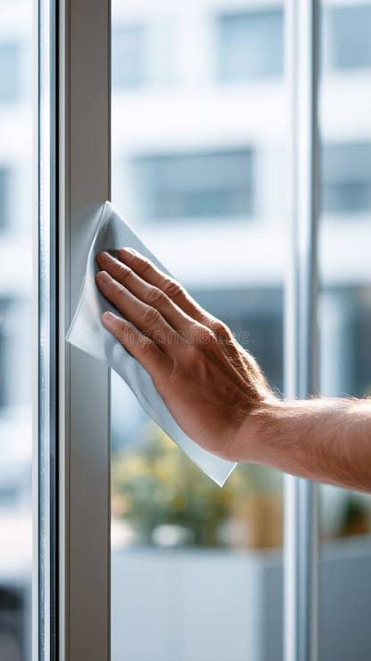
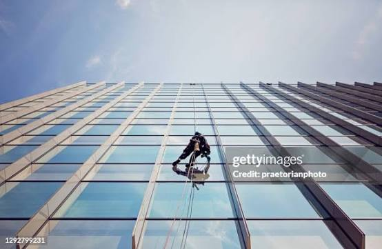
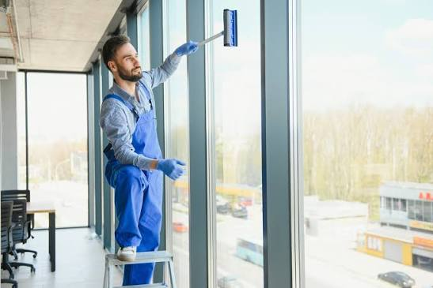

BSGM&CS-LLC Window Cleaning Services in Banani, Dhaka – Crystal Clear Views Guaranteed!
Hero Section – Crystal Clear Windows for a Brighter Banani!
- Eco-Friendly Cleaning Solutions[cite: 10]
- Available for 24/7 Emergency Service[cite: 10]
- 100% Satisfaction Guarantee[cite: 10]
- Same-Day Availability[cite: 10]
Schedule Your Appointment Today and Enjoy Your Service!
GET 15% OFF BSGM&CS-LLC
Best Professional Window Cleaning Service in Banani, Dhaka
At BRIGHT STREET GENERAL MAINTENANCE AND CLEANING SERVICES – L.L.C (BSGM&CS-LLC), we believe every window deserves a clear view[cite: 11]. A freshly cleaned window doesn't just improve how things look, it transforms how your space feels[cite: 11]. Whether you live in a waterfront apartment or manage a commercial tower, BSGM&CS-LLC expert cleaners bring years of local know-how and industry-best tools to each job[cite: 11].
We take pride in offering personalized service to our clients across Banani[cite: 11]. From salty coastal buildup to city dust and grime, we know how to tackle every kind of dirt[cite: 11]. Our team is friendly, professional, and detail-oriented, so whether it's a one-time job or scheduled maintenance, you'll always see the BSGM&CS-LLC difference[cite: 11].
Benefits of Our Window Cleaning Services – Clear Solutions for Every Need[cite: 12].
Residential Window Cleaning
There’s something uplifting about sunlight streaming through clean windows[cite: 12]. With BSGM&CS-LLC residential service, your home will feel brighter, fresher, and more open[cite: 12]. We clean both interior and exterior windows, remove hard water spots, dust window screens, and polish balcony glass and mirrors[cite: 12]. We’re gentle with your space and respectful of your time[cite: 12]. Whether it’s a cozy flat or a spacious villa, we treat your home like our own[cite: 12].
Commercial High-Rise Cleaning
Your building’s appearance says a lot about your brand, and spotless glass makes a bold statement[cite: 12]. BSGM&CS-LLC handles Banani’s tallest towers with ease, thanks to our certified rope-access and boom-lift technicians[cite: 12]. We clean entire facades, from ground level to rooftop, including any solar panels[cite: 12]. Our team operates discreetly and efficiently to avoid disturbing your staff or visitors[cite: 12]. We help your building stand out with every gleaming pane[cite: 12].
Special Event Prep Cleaning
Hosting an event? Make sure your space shines with BSGM&CS-LLC special event window cleaning[cite: 12]. We’re experts at removing last-minute smudges, dust, and construction residue from windows, mirrors, and glass dividers[cite: 12]. Whether it’s a wedding, launch party, or corporate function, we’ll get the place camera-ready[cite: 12]. And when the guests are gone, we’re happy to return for a post-event touch-up[cite: 12]. With BSGM&CS-LLC, every reflection is picture-perfect[cite: 12].

Areas We Serve – Across Banani, Dhaka
- City Center: Banani, Gulshan, Baridhara
- Business Districts: Mohakhali Commercial Area, Uttara Sector 7, Motijheel
- Residential Areas: Dhanmondi, Uttara, Bashundhara R/A
- New Developments: Purbachal, Uttara Phase 3, Gulshan Extension

Why Choose BSGM&CS-LLC for Window Cleaning?
- Trusted Experts: Over a decade of experience in local window cleaning[cite: 14].
- Advanced Water-Fed Pole Systems: Clean up to 12 stories safely from the ground[cite: 14].
- 100% Insured Team: Your property is fully protected during every job[cite: 14].
- Flexible Scheduling: We work around your calendar, including early morning & evenings[cite: 14].
- Competitive Pricing: Premium results, clear rates, no hidden costs[cite: 14].
Testimonials
We did not realize how much of a difference brightening windows would make until BSGM&CS-LLC did ours. The mood in the living room is so much better now. The team was friendly and came on time, and there was no hassle whatsoever. Everything shines. We will be calling again very soon.
Kareem H., Banani
Our office tower gets dusty fast, and I was impressed with how quickly BSGM&CS-LLC made it all look brand new again. Their high-rise crew was professional and clearly knew what they were doing. No mess, no delays, just clean glass and satisfied staff. Great job, guys.
Nabeel A., Gulshan
Post-renovation dust was everywhere, especially on the windows. BSGM&CS-LLC got it all off without a scratch. They were courteous, careful around our new furniture, and super efficient. It made the whole house feel finished. I've already recommended them to neighbors.
Rania M., Baridhara